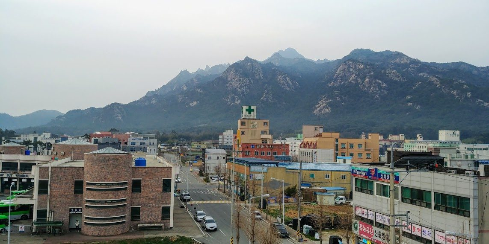

영암군, 삼호 미암 간척지 약 1,700만㎡에 2GW 이상 재생에너지 집적화단지 추진…토지소유자 등 200여 명과 간담회

공공 주도 입지·마스터플랜, 공모로 사업시행자 뽑아 주민참여 비율·수익 환원 규모 심사 계획…동의서는 정부 지정 신청 자료, 개발 이익은 주민참여형 기본소득 재원으로
영암군이 삼호읍 미암 간척지 일원 약 1,700만㎡에 2GW 이상 규모의 재생에너지 집적화단지를 추진하면서, 부지 토지소유자와 주민 등 200여 명을 상대로 삼호읍행정복지센터에서 간담회를 열었다. 군은 27일 간담회 내용을 알렸고, 간담회는 23일 열린 것으로 전해졌다. 3월 공개된 구상에서 태양광 1.6GW 이상으로 제시됐던 규모는 이후 육상 태양광 1.6GW와 수상 태양광 약 427MW를 합친 2GW급으로 구체화됐지만 실제 투자 규모와 시설계획은 사업시행자 선정 뒤에 정해지며, 정부에 내는 집적화단지 지정 신청 시점은 당초 올해 하반기에서 2027년 초로 늦춰졌고 군은 2030년까지 단지 조성을 마친다는 목표를 세웠다. 군은 이 자리에서 공공이 입지를 찾고 마스터플랜을 세우며, 토지소유자와 주민 권익을 먼저 보호하고, 투명한 공모로 사업시행자를 뽑아 발전 이익 공유를 최대한 늘린다는 원칙을 내놓고, 민간 사업자끼리의 부지 확보 경쟁이나 불리한 계약으로 농민이 피해를 보지 않도록 행정이 사업 전반을 관리하겠다고 했다. 정부의 집적화단지 지정을 받은 뒤에는 업체의 재무 건전성과 수행 역량, 주민참여 비율과 수익 환원 규모를 심사해 시행자를 정할 계획이며, 이날 토지소유자에게서 받은 사업 추진 동의서는 지정 신청과 부처 협의를 위한 기초 자료로 쓴다. 군은 동의서가 기존 농지 임대차계약을 강제로 끝내거나 공사를 시작한다는 뜻이 아니며, 토지 이용 조건과 계약 방식은 시행자 공모 뒤 따로 협의한다고 설명했다. 군은 개발 이익을 분석해 주민참여형 기본소득 재원과 복지 사업으로 돌리는 로드맵을 다듬을 예정이며, 우승희 군수는 이 사업이 영암의 빛과 바람을 "군민의 소득과 지역경제 활력"으로 잇는 일이라고 말했다.
시민에너지 관점
간척지 2GW에서 나올 이익을 군민 기본소득으로 돌리겠다는 구상은 공유 자원의 수익을 주민 모두와 나누는 길이다. 미국 알래스카주는 1976년 주민투표로 석유 수입 일부를 쌓는 영구기금을 만들었고, 1982년부터 해마다 모든 주민에게 배당을 나눠 왔다. 땅을 가진 사람과 땅을 빌려 농사짓는 임차농, 땅이 없는 주민 사이에 이익이 어떻게 나뉠지가 갈등의 불씨가 될 수 있다는 우려가 있지만, 그래서 더욱 배분 기준을 먼저 공개하고 주민이 지분을 가진 주인으로 참여하는 몫을 정해 두어야 개발 이익이 외지 자본이 아니라 지역에 남는다. 영암군은 시행자 심사에 쓰겠다는 주민참여 비율과 수익 환원 규모의 최소 기준, 임차농 보호 방안을 정부 지정 신청 전에 군민 앞에 내놓아야 한다.
출처: 뉴스워커 2026-10-27 김홍재 원문 보기
霊岩郡、三湖・美岩干拓地の約1,700万㎡で2GW以上の再生可能エネルギー集積化団地を推進…土地所有者ら200人余りと懇談会
公共主導の立地選定・マスタープラン、公募で事業者を選び住民参加比率・収益還元規模を審査する計画…同意書は政府指定申請の資料、開発利益は住民参加型ベーシックインカムの財源に
霊岩（ヨンアム）郡は、三湖邑・美岩（ミアム）干拓地一帯の約1,700万㎡に2GW以上の規模の再生可能エネルギー集積化団地を推進するなかで、用地の土地所有者や住民ら200人余りを対象に三湖邑行政福祉センターで懇談会を開いた。郡は27日に懇談会の内容を公表し、懇談会は23日に開かれたと伝えられている。3月に公表された構想で太陽光1.6GW以上とされていた規模は、その後、陸上太陽光1.6GWと水上太陽光約427MWを合わせた2GW級に具体化されたが、実際の投資規模と施設計画は事業者の選定後に決まる。政府に出す集積化団地の指定申請の時期は当初の今年下半期から2027年初めに遅れ、郡は2030年までに団地の造成を終える目標を掲げた。郡はこの場で、公共が立地を探してマスタープランを立て、土地所有者と住民の権益を優先して守り、透明な公募で事業者を選んで発電利益の共有を最大限に広げるという原則を示し、民間事業者同士の用地確保競争や不利な契約で農家が被害を受けないよう、行政が事業全体を管理すると述べた。政府の集積化団地指定を受けた後は、企業の財務健全性と遂行能力、住民参加の比率と収益還元の規模を審査して事業者を決める計画で、この日土地所有者から受け取った事業推進同意書は、指定申請と省庁協議のための基礎資料として使う。郡は、同意書が既存の農地賃貸借契約を強制的に解除したり工事に着手したりすることを意味するものではなく、土地利用の条件や契約方式は事業者公募の後に別途協議すると説明した。郡は開発利益を分析して住民参加型ベーシックインカムの財源や福祉事業に回すロードマップを練る予定で、ウ・スンヒ郡守はこの事業が霊岩の光と風を「郡民の所得と地域経済の活力」につなげるものだと語った。
市民エネルギーの視点
干拓地の2GWから生まれる利益を郡民のベーシックインカムに回すという構想は、共有資源の収益を住民全体で分かち合う道だ。米国アラスカ州は1976年の住民投票で石油収入の一部を積み立てる永久基金をつくり、1982年から毎年すべての住民に配当を配ってきた。土地を持つ人、土地を借りて耕す小作農、土地を持たない住民の間で利益がどう分かれるかが対立の火種になりうるとの懸念もあるが、だからこそ配分の基準を先に公開し、住民が持分を持つ主体として参加する取り分を決めておいてこそ、開発利益は外部資本ではなく地域に残る。霊岩郡は、事業者審査に使うとする住民参加比率と収益還元規模の最低基準、小作農の保護策を、政府への指定申請の前に郡民に示すべきだ。
出典: ニュースワーカー 2026-10-27 キム・ホンジェ 原文を読む
灵岩郡拟在三湖美岩围垦地约1,700万㎡建设2GW以上可再生能源集聚园区…与土地所有者等200余人座谈
计划由公共主导选址并制定总体规划，通过公开招募选定实施主体并审查居民参与比例和收益回馈规模…同意书用作申请政府认定的材料，开发收益拟用作居民参与型基本收入财源
韩国灵岩郡在推进三湖邑美岩围垦地一带约1,700万㎡、规模2GW以上的可再生能源集聚园区过程中，在三湖邑行政福利中心面向用地土地所有者和居民等200余人召开了座谈会。郡政府于27日公布座谈内容，据报道座谈会于23日举行。3月公布的构想中规模为1.6GW以上太阳能，此后具体化为陆上太阳能1.6GW加水上太阳能约427MW的2GW级项目，但实际投资规模和设施计划要在选定实施主体后才能确定；向政府提交集聚园区认定申请的时间已从原定的今年下半年推迟到2027年初，郡政府的目标是在2030年前完成园区建设。郡政府在会上提出以下原则：由公共部门寻找选址并制定总体规划，优先保护土地所有者和居民权益，通过透明的公开招募选定实施主体，最大限度扩大发电收益共享；并表示将由行政部门统筹管理整个项目，避免农民因民间开发商争抢用地或不利合同而受损。获得政府集聚园区认定后，郡政府计划审查企业的财务稳健性和执行能力、居民参与比例和收益回馈规模，以确定实施主体；当天从土地所有者处收取的项目推进同意书，将作为申请认定和部门协商的基础材料。郡政府说明，同意书并不意味着强制解除现有农地租赁合同或开工，土地使用条件和合同方式将在招募实施主体后另行协商。郡政府还将分析开发收益，完善把收益用作居民参与型基本收入财源和福利项目的路线图；郡守Woo Seung-hee表示，这一项目是把灵岩的阳光和风力转化为"郡民收入和地方经济活力"的事业。
市民能源视角
把围垦地2GW产生的收益转为郡民基本收入的构想，是让全体居民分享公共资源收益的一条路。美国阿拉斯加州在1976年经全民公投设立永久基金，把部分石油收入积存起来，自1982年起每年向所有居民发放分红。有人担心，有地者、租地耕种的佃农和无地居民之间如何分配收益，可能成为矛盾的导火索；正因如此，更应先公开分配标准，并事先确定居民以持股主人身份参与的份额，开发收益才会留在当地而不是流向外来资本。灵岩郡应在向政府申请认定之前，向郡民公开其拟用于审查实施主体的居民参与比例和收益回馈规模的最低标准，以及保护佃农的方案。
来源: Newsworker 2026-10-27 Kim Hong-jae 查看原文
Yeongam County pursues renewable energy cluster of 2GW or more on about 17 million㎡ of Samho-Miam reclaimed land; meets some 200 landowners and residents
County to lead site selection and master plan, then pick a developer by open call judged on resident participation ratio and profit return; consent forms are for the government designation application, and development profits are to fund a participatory basic income
Yeongam County, which is pursuing a renewable energy cluster of 2GW or more on about 17 million square metres of the Miam reclaimed land in Samho-eup, held a meeting at the Samho-eup administrative welfare centre with some 200 landowners, residents and others. The county released details of the meeting on Oct. 27, and the meeting was reported to have taken place on Oct. 23. The scale, put at 1.6GW or more of solar in a plan unveiled in March, has since been fleshed out into a 2GW-class project combining 1.6GW of ground-mounted solar and about 427MW of floating solar, though the actual investment and facility plans will be fixed only after a developer is chosen; the application for government designation of the cluster has been pushed back from the second half of this year to early 2027, and the county aims to finish building the complex by 2030. There the county set out its principles — the public sector finds the site and draws up a master plan, landowners' and residents' rights come first, a developer is chosen through a transparent open call and the sharing of generation profits is maximised — and said the administration would manage the whole project so that farmers are not harmed by private developers competing for land or by unfavourable contracts. After the government designates the cluster, the county plans to choose the developer by examining companies' financial soundness and capability as well as the resident participation ratio and the scale of profits returned, and the consent forms collected from landowners that day will serve as basic material for the designation application and talks with ministries. The county explained that signing the forms does not mean existing farmland leases will be forcibly terminated or that construction will begin, and that land-use terms and contract methods will be negotiated separately after the developer is selected. The county plans to analyse the development profits and refine a roadmap for channelling them into a participatory basic income and welfare programmes, and County Governor Woo Seung-hee said the project would turn Yeongam's sunlight and wind into "income for residents and vitality for the local economy."
Citizen Energy View
The plan to turn profits from 2GW on reclaimed land into a basic income for residents is a way of sharing the returns from a common resource with everyone. The US state of Alaska set up its Permanent Fund by popular vote in 1976 to save part of its oil revenue, and has paid an annual dividend to every resident since 1982. Some worry that how the profits are split among landowners, tenant farmers who rent the land and residents who own none could spark conflict, which is all the more reason to publish the distribution rules first and fix a share in which residents take part as equity owners, so that the development profits stay in the region rather than going to outside capital. Before applying for government designation, Yeongam County should put before its residents the minimum standards for the resident participation ratio and profit return it says it will use to judge developers, along with measures to protect tenant farmers.
Source: Newsworker 2026-10-27 Kim Hong-jae Read the original